A single-storey house of 490 m² standing on 1.2 hectares of flat land a kilometre outside Yaxkukul — four bedrooms behind an arcaded front, a pool and palapa, a shade house already planted with vanilla, and twenty-one solar panels carrying the whole property.
What is unusual here is the ratio. The lot runs 56.52 m across the front and 212.65 m deep — 12,047.91 m² in total — and the house occupies a fraction of it. The rest is garden, orchard-scale open ground and clear space, all of it flat, with no slope to work around and nothing built to the boundary.
The house itself was built in 2018 and is in excellent condition. It presents to the garden as a long arcaded front — a run of arches on columns, the hacienda vernacular done plainly — and everything behind it sits on one level: four bedrooms, three full bathrooms and two half baths, and rooms deep enough to take a full-length dining table without crowding. Five air conditioning units, sized to the rooms they serve, hold the house at temperature through the Yucatán summer. It is offered furnished.
The finishes are warm and consistent throughout: granite counters and dark wood cabinetry in the kitchen, a talavera tile backsplash behind the range, patterned cement floor tiles laid through the dining room, fitted wood carpentry in the bedrooms, and ceiling fans in every room alongside the air conditioning. One room is fitted out as a home gym, another as a study — the plan is generous enough to absorb both.
It is also, to an uncommon degree, self-sufficient. Twenty-one solar panels supply the property, a generator stands behind them, and a water softener treats the supply — the three things that turn a rural address from a compromise into a comfortable one. Sprinkler irrigation runs the garden.
Inside the house
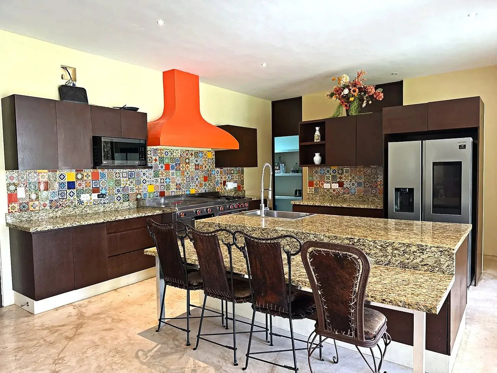
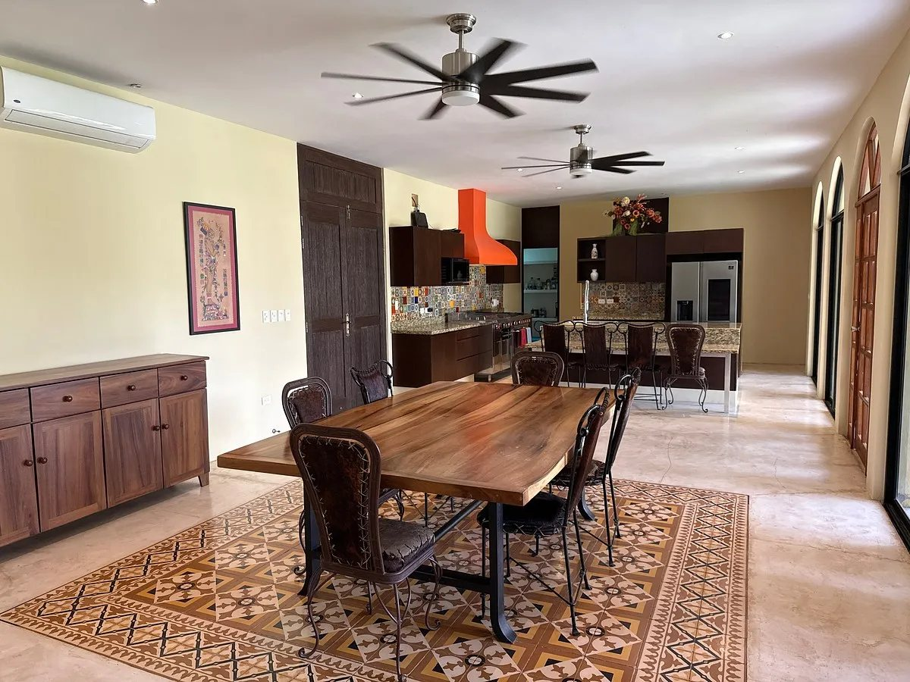
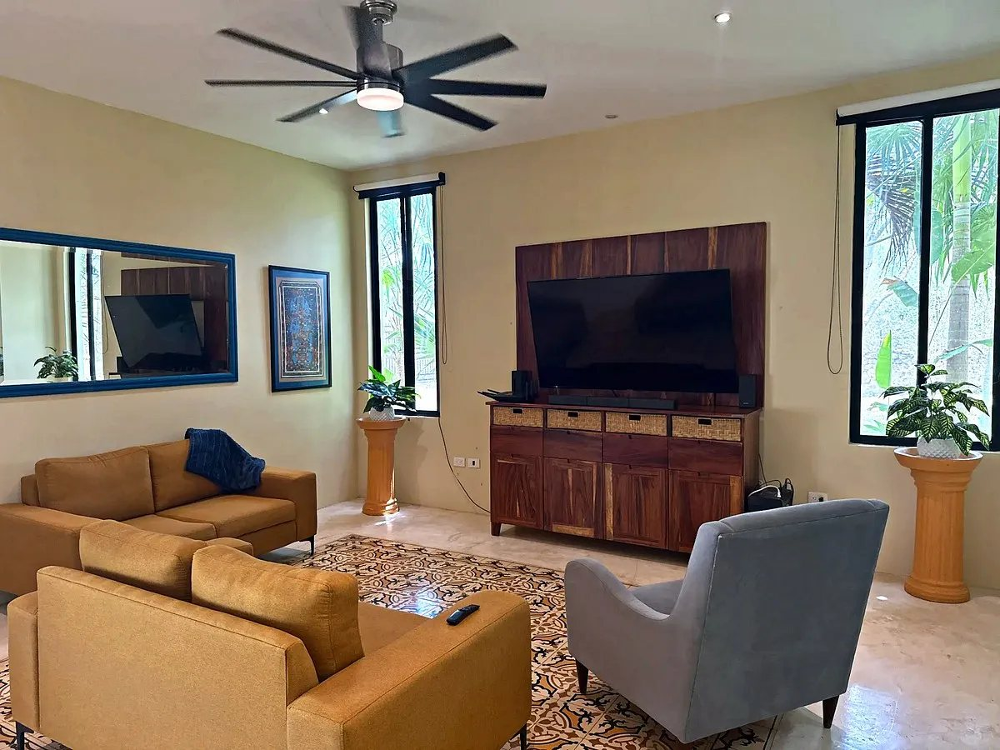
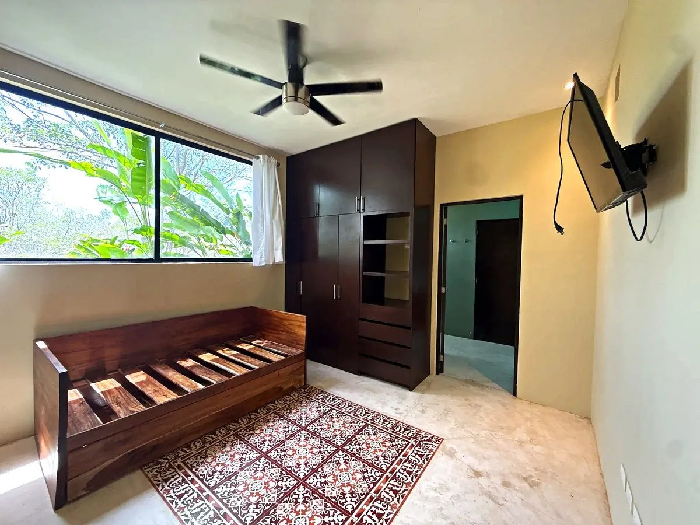
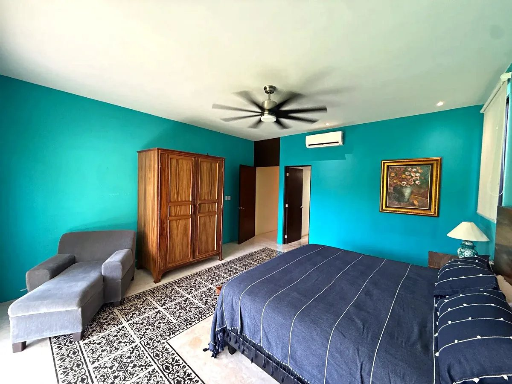
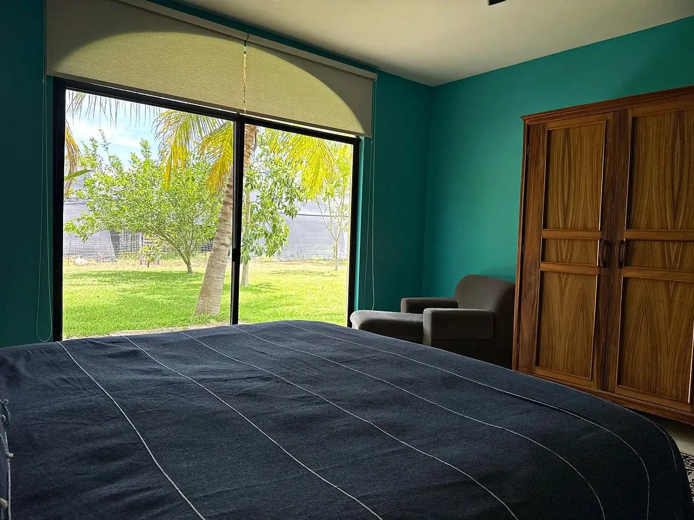
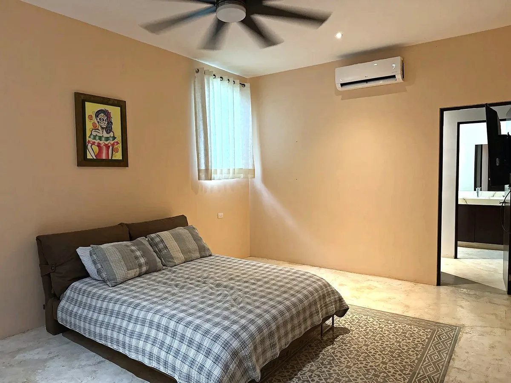
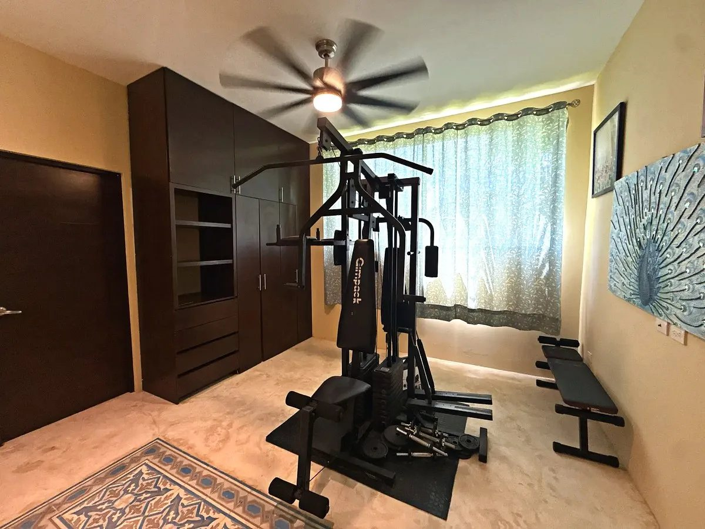
The house is sold furnished, with the kitchen equipped.
Outside
The pool sits in open lawn under a thatched palapa, with a full filtration system and planting around it rather than a bare slab. Beyond it the ground simply keeps going. At the back of the property stands a shade house already planted with vanilla — rows of established vines trained up their posts under the netting — and a casita with a half bath sits at the front, useful as a guest room, a studio or an office at the gate.
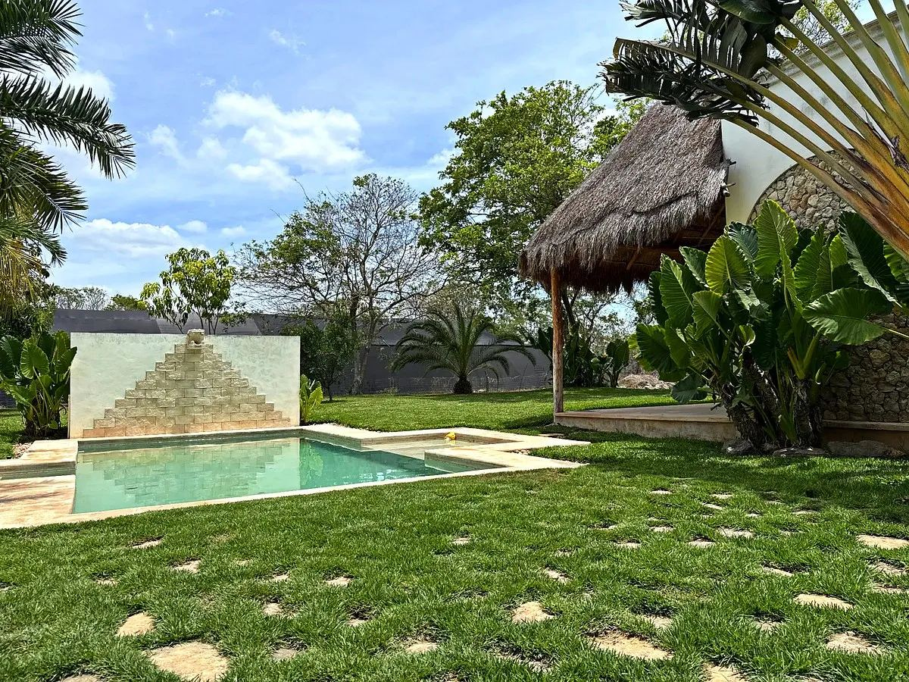
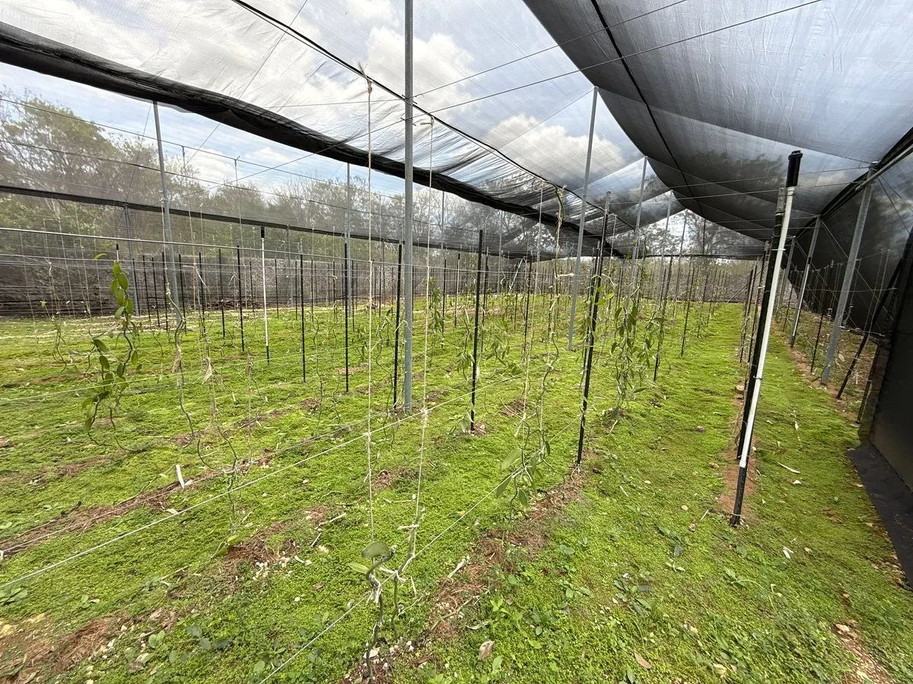
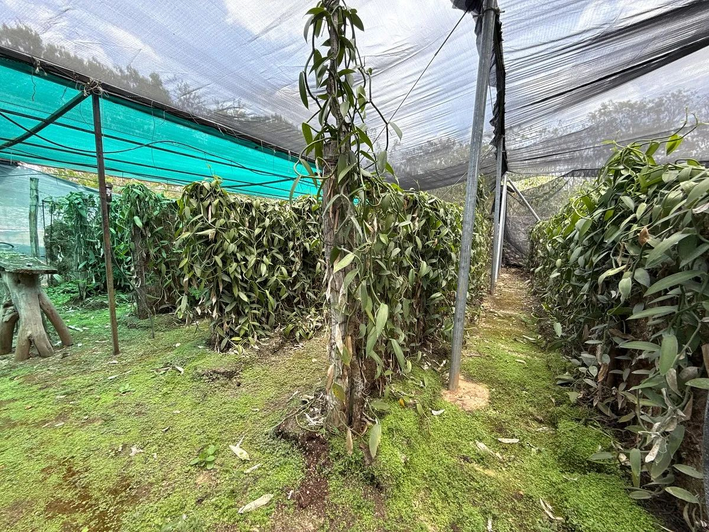
The vanilla is planted and growing; yields have not been independently verified.
Finishes & systems
The house
- Single storey throughout
- Four bedrooms
- Three full bathrooms, two half baths
- Fitted kitchen with granite countertops
- Talavera tile backsplash
- Solid wood carpentry throughout
- Patterned cement floor tiles
- Arcaded front on columns
- Home gym and study
- Ceiling fans throughout
- Sold furnished and equipped
- Built 2018, excellent condition
Systems
- 21 solar panels
- Backup electric generator
- Water softener
- Five air conditioning units
- Two at 12,000 BTU, two at 18,000 BTU, one at 24,000 BTU
- Sprinkler irrigation
- Pool with full filtration system
- Covered parking for two
On the grounds
- Shade house planted with vanilla
- Casita at the front with half bath
- Thatched palapa by the pool
- Planted garden and lawn
- Flat topography throughout
The land
Twelve thousand square metres is a different kind of holding from a house with a garden, and it is worth being plain about what it allows. The frontage is wide and entirely undeveloped — the obvious place to build, whether that means a second house, guest casitas or something let. Behind the house the ground is flat and clear enough to plant at scale, and the shade house is standing, planted and irrigated already.
For a buyer who wants a self-sustaining property rather than a weekend house, most of the expensive groundwork — power, water treatment, irrigation, growing structure, a finished house to live in while you work on the rest — has already been done.
Yaxkukul
Yaxkukul is a small town on the Mérida–Motul road, northeast of the city and past Conkal, with Tixkokob a short drive to the south. The centre is a kilometre away — close enough for daily errands, far enough that the property sits in open country rather than in the town.
Mérida is roughly half an hour by road, which puts the Periférico, the hospitals and the airport within an easy run, and the Gulf coast at Progreso is not much further. This is the corridor the city has been growing into: Conkal and Chicxulub Pueblo have been absorbing new development for years, and Yaxkukul sits just beyond that line — which is precisely why land here still costs what it does.